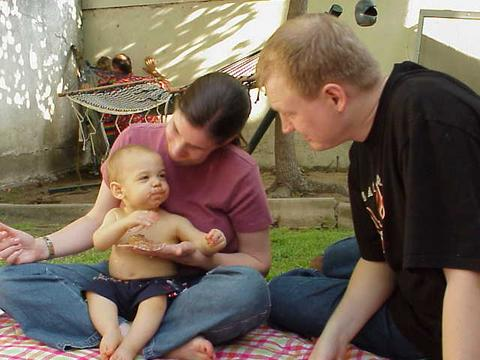
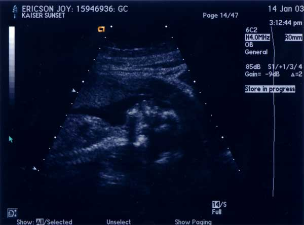
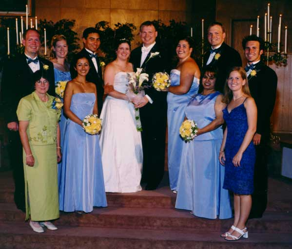
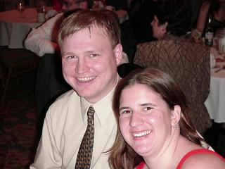
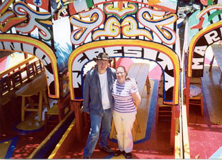
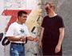

{kind=link}
{kind=link}
{kind=link}
{kind=link}
{kind=link}
{kind=link}
{kind=link}

 Joshua's first taste of birthday cake.
My wife, Joy, sells kitchen tools, speaks fluent Spanish and is the most remarkable woman I know.
Joshua Lewis Ericson was born on May 28, 2003 in Denver, Colorado.
Our first visit with our Doctor was on January 8, 2002. She gave us the results of Joy's blood tests, and everything is fine. We also listened to the baby's heartbeat with a Doppler stethoscope. It's wonderful to hear the quick, steady beat of the heart simulating blood-flow. I guess I never understood the "Miracle of Birth" before now.
On January 14, 2003 we went into the big Kaiser hospital on Sunset Boulevard (where Joshua would have been born) to have a more extensive ultrasound. It was amazing! We could see the skeleton, the four chambers of the heart, facial features and even the baby sucking its thumb! The technician also determined that we would have a boy. More importantly, the baby appears to be healthy and developing well. Most problems are found either in this ultrasound or in the blood tests.
We started a ten week birth class taught by a Bradley Method® teacher. It's very interesting and I'll have to tell you about it sometime.
 Our baby in profile.
If you'd like to help us save for his college education with Upromise, please let us know.
 Our wedding party.
See Joy's photo collection for more pictures (including my brother, Bob).
I asked Joy to marry me at Joshua Tree National Park. Here is a topographical map of the place I asked her. And this is an aerial picture. Oddly I didn't think of the "Jumbo Rock" joke—she did. More information about our wedding can be found at http://www.theknot.com/members/JoyMcMasters&JonEricson. My mom discovered that Joy and I were married on the 66th Anniversary of Joshua Tree.
I chugged at the meeting following our engagement.
 Joy and I at my office Christmas Party
Joy and I went to México for two months in Summer 2001 with Spearhead. One of my responsibilities was to write the support letter.
|  | While we were in Mexico Joy wrote weekly email updates to our supporters: |
This is one of the pictures Joy took. Others may be found in Joy's photo album or in my annotated photo album.
 The forces of Good and Evil face offHere is an aerial image of Mexico City. The Spearhead office, Spanish classes, meetings and Joy's family were on Liverpool. More importantly (in a city with a ration of public to private transportation inverse compared to Los Angeles), it was close to Metro Linea 1, between Cuauhtémoc and Insurgentes. I lived in the south-east corner of Mexico City. It took about 20 minutes via Micro (small buses) to get to Constitución de 1917 on Linea 8. From there, it took another 45 minutes to an hour to get to class in the morning. Joy's "commute" was 30 seconds.
Adam Ribbeck and I lived with José Carbente Hernandez and his mother Isabel. "Next door" (each house shares a wall with the houses on either side) lived Isabel's mother (abuelita), brother and his family. One of Isabel's nieces, Marcela Reyes, lived nearby and came to visit fairly often. Every morning Isabel made breakfast for us, then left to cook and clean for another family in order to earn a living. José worked all over the city with a construction crew. When we came home from Spearhead events there was always some sort of juice to drink—pineapple, orange, tamarindo, tuna(a fruit, not a fish), lime, watermelon, papaya, guava, and (most importantly) cucumber.
Joy and I wrote a letter of thanks.
My brother Dave got married in May, 2002. Their web-page is http://www.theknot.com/members/SarahSloat&DavidEricson.
My other brother, Doug, just got engaged. So in the proud tradition of the Ericsons, he set up a webpage. But don't click over there; it will shock you with its mediocrity. (You asked for it Doug.)
As far as I know, my other brother, Bob, doesn't have a website and isn't engaged.
I reformatted Galatians for the Alpha Gamma Omega fraternity (AΓΩ) Bible study that I led.
I attend Iglesia Biblica El Calvario in Burbank. Our pastor, Dan Balderas, performed our marriage and led us in pre-marital counseling. He died in the Fall of 2003 after a long struggle with cancer.
Dan Balderas
I've loved books as long as I can remember. Lately I've been using LaTeX to typeset public domain books like The Light Princess by George MacDonald. If you intend to print a copy, you might want a version in signature format. For those interested, I also have the source file. Thanks to Project Gutenberg for providing the text of this and many other books in ASCII format. You can also buy a copy from Amazon.
Currently, I am a computer programmer with Raytheon, a contractor for the Jet Propulsion Laboratory. My project is the Tropospheric Emission Spectrometer, which is scheduled to launch in 2004. Previously, I was part of the ground support team for the Shuttle Radar Topography Mission.
Most of my work is in C, Korn shell and PL/SQL at the moment, but I much prefer Perl. Perl 6 is still in development.
If you understood the previous paragraph, you've probably guessed that I'm a fan of the Unix operating system. I think of it as a "literate" computer system, since everything can be done by typing words. Unlike writing (which moved from hieroglyphs to letters), computer system design seems to move from words to images. I still use Windows so that I can use programs like Quicken and to play games which aren't available on Unix machines. Cygwin (a Unix-like layer over Microsoft Windows) is the best of both worlds. You might find this essay by Neal Stephenson interesting, though I don't completely agree with it.
For the purposes of full disclosure, I must say that I am an XEmacs user. It stands at one of the twin peaks of Unix editor evolution. (On the other peak stands Vim.) With a little work you can make it do nearly anything, including sort mail. It's also darn good at editing documents.
You might as well know that I am not a Professor Emeritus of Rhetoric and Communication Studies at Drake University. Nor am I a bassist for a Scandinavian Indie band called Stardog. As far as I know, I am not "a guy who wanders into town looking for evidence that Tyler Beach was once the site of a Viking settlement," whatever the novel Buried Dreams might have to say about the matter.
Yahoo adds a little box, either at the top or bottom of this page which causes the W3C validator to fail. There is nothing I can do about this.